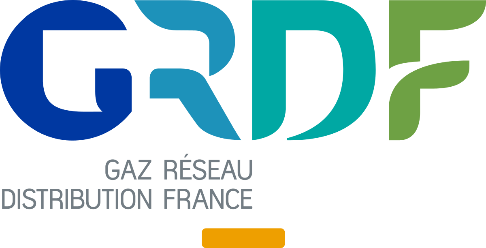

Plus de 10 projets en développement web réalisés dont 3 en individuel
Durant ma formation de trois mois à l'école La Manu, j'ai travaillé en équipe sur différents projets complet et formateur.
Plusieurs types de contrats de travail durant mes expériences
Je compte à mon actif une alternance, un stage, un CDD et des jobs d'été dont un chez Amazon.
Community manager sur l'innovation
J'ai animé un stand sur l'innovation durant un forum de l'entreprise où je faisais mon alternance.
Chargé de reporting réglementaire
Paris
Janvier - Avril 2020
A ce poste j'ai eu à réaliser des missions de conformité en lien avec les réglementations SFTR; PRIIPS. Mais aussi en lien avec les directives MIF 2 et AIFM.
Gestionnaire Middle office
Paris
Mars - Septembre 2019
Les missions à ce poste furent très calculatoires telle que la réalisation du contrôle des risques des fonds de la société de gestion.
Assistant manager au déploiement du Lean Management (alternance)
Clermont-Ferrand
Novembre 2017 - Septembre 2018
A ce poste j'ai contribué à instaurer le Lean Manage- ment au sein des équipes terrain afin d'améliorer leur productivité.
